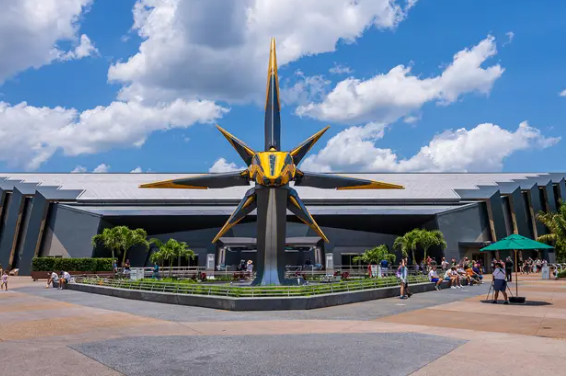
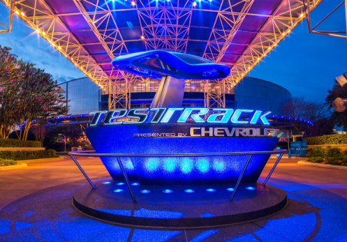
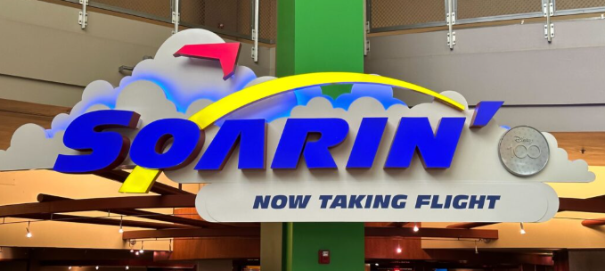
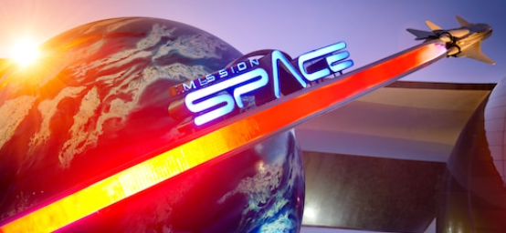

Epcot - Thrill Seeking Day
For starters most of these rides have a minimum 48 inches height requirement. So take that into consideration even if you have kids who love rollercoasters. This park is themed around the future. Epcot stands for Experimental Prototype Community of Tomorrow. So the park is supposed to give of futuristic vibes. Not only that but there are different areas that you can walk around that are themed around different countries.
Cosmic Rewind
This is Epcots newest ride. This is by far the smoothes roller coaster I have ever been on and it is for sure my favorite. This ride has one of the best lines to wait in because it is mostly inside and there are lots of things to look at and interact with. If you get motion sickness this may not be the ride for you though because it is in the dark and there are little lights that are supposed to look like stars so this ride will get you very sick if you are not carful.
Test Track
This ride was recently referbished so it has a longer ride than it normally would just because people haven't been able to ride it for a while. On this ride you make your own car and your car goes through different test to see how well it does.
Soarin' Around the World
Soarin is a bit of a walk from Test Track but it is not too bad. Soarin tends to get quite the line so it is important that you get here relativly early while everyone else is still trying to ride the other big rides. This ride takes you high up in the air so if you are not a fan of hieghts this might not be a ride for you.
Mission Space
Finally head over to Mission Space. Now this ride never has a wait limit and that is simply because it is very intense. If you get motion sickness this ride is deffinently not for you. If you are also not a fan of tight spaces this ride is also not for you. I would recomend to anyone who has never rode this ride before to go on green first simply because it is the less intense version.